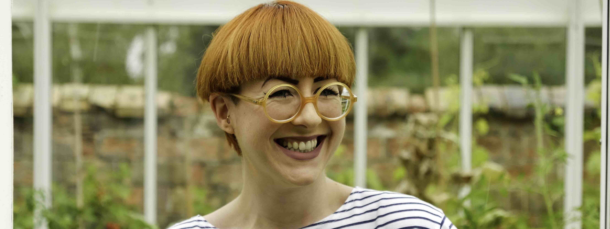

about us
at allotment our dedicated team of chefs love nothing more than creating bespoke menus to suit any occasion, big or small; from an office lunch to impress your clients, all the way through to the most special wedding day
we pride ourselves on creating seasonal food that is as delicious as it is beautiful, working with local produce and our little allotment to create unique and interesting menus that cater to all requirements
katie moore
even from the early days of her career in advertising Katie knew her passion lay in food, looking forward more to the weekends of baking for markets than the monday morning meetings, and relishing any excuse for a dinner party. When a fortuitous opportunity arose to uproot to a friends’ food business in Shanghai, she left the day job behind and never looked back
having returned to the UK, and completely convinced that her future lay in the kitchen, the seeds for allotment were sown; quite literally, as the greenhouse began to fill with seedings she was planting, to eventually make their way onto dinner plates
She jumped in at the deep end, running a 3 month pop-up in the kitchen at NOVI in Cambridge, serving a delicious brunch, lunch + cake menu that changed each week to feature new produce. It proved to be popular amongst locals, and she quickly started to get orders from other favourite food haunts to stock allotment products
In the two years since, Katie has developed the business to offer a bespoke catering service alongside her wholesale range, working in the esteemed kitchens of the Fat Duck, Lily Vanilli and Today Bread along the way to develop and refine her skills
Still passionate about local produce, Katie works hard at growing new and interesting varieties of vegetables, herbs and flowers on her allotment to supplement the wares of other local suppliers on the growing menu allotment offers
The food produced by the team in the allotment kitchen is both delicious and fun, sometimes a little eccentric, just as Katie always hoped, just like the kind of food she likes to eat; locally grown like you’ve never seen it
Now an established part of the Cambridge food scene, Katie has a monthly seasonal recipe feature in Velvet Magazine